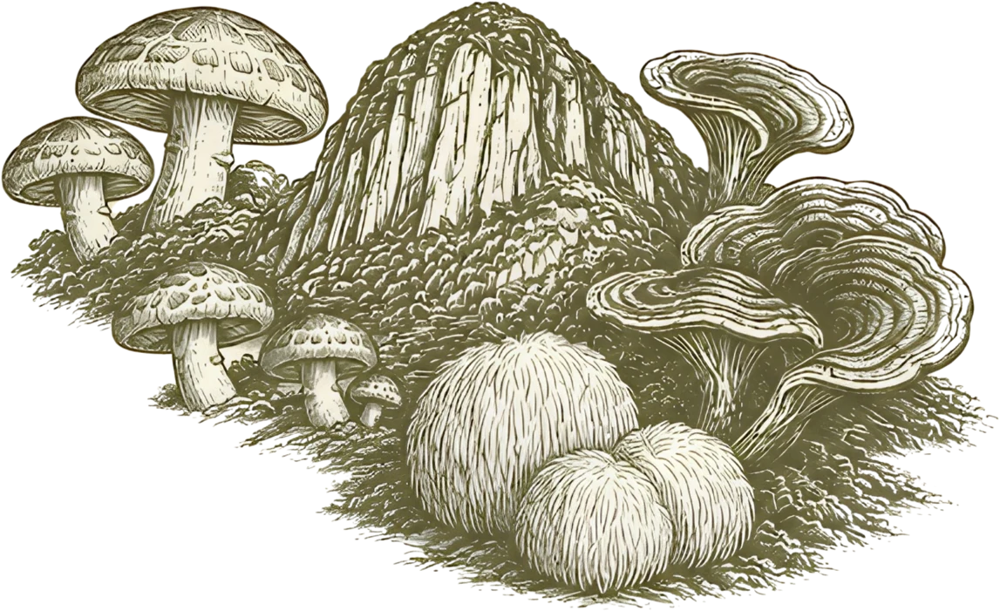

Del micelio a la mesa.
Hongos para cocinar con criterio. Conocer la seta. Imaginar el plato.
Shiitake · antes de la primera cosechaRecibir aviso de la primera cosecha


Hongos para cocinar con criterio. Conocer la seta. Imaginar el plato.
Shiitake · antes de la primera cosechaRecibir aviso de la primera cosecha
